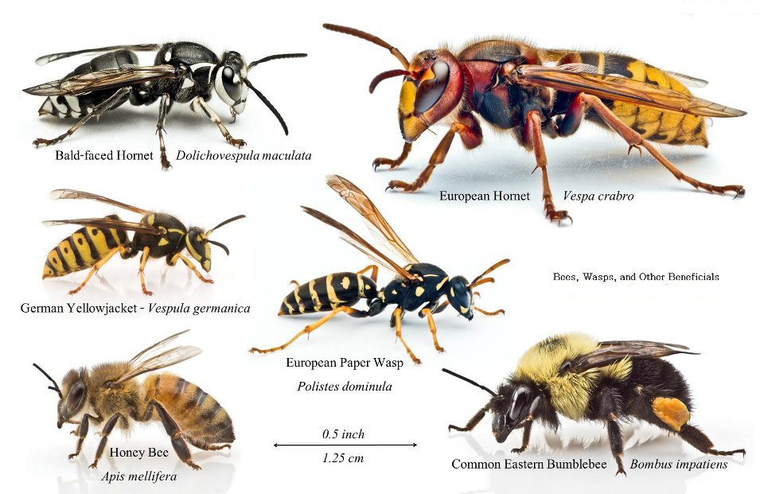

Honey bee swarm removal is another specialty we offer to our community and region.
Swarms can be intimidating and wild hives can cause a lot of anxiety for residents. We hope to promote a happier relationship between bees and humans by specializing in honey bee swarm removal. We can remove swarms and wild hives from yards and structures without the use of hazardous chemicals. By using practical methods of removing bee colonies from structures, we ensure minimal damage and minimal intrusion to the home or structure. All colonies of bees removed from any area are hived and used as domesticated honey bee stock in our apiary.
We have removed swarms from open areas and from enclosed spaces including tree trunks, walls, ceilings, and eaves. We have assisted the Baltimore Police and the Baltimore Fire Department in swarm removal.
Photo: Alex Surcica
Please note the color, size and shape of the honey bee compared to the other wasps and hornets in this picture when identifying problem pollinators. Also be aware that honey bees only can sting once and leave a “stinger” in the skin after the individual bee has stung. Wasps and hornets do not leave a “stinger” in the skin.